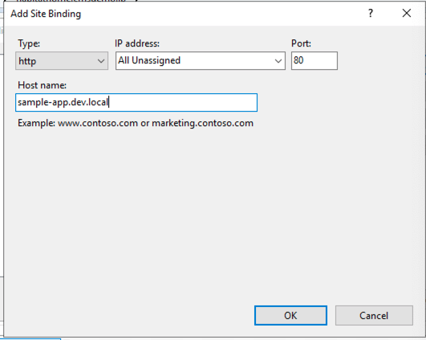
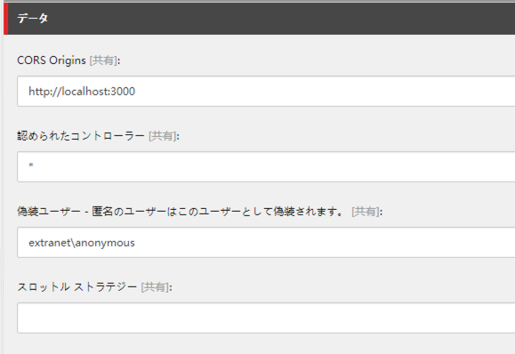
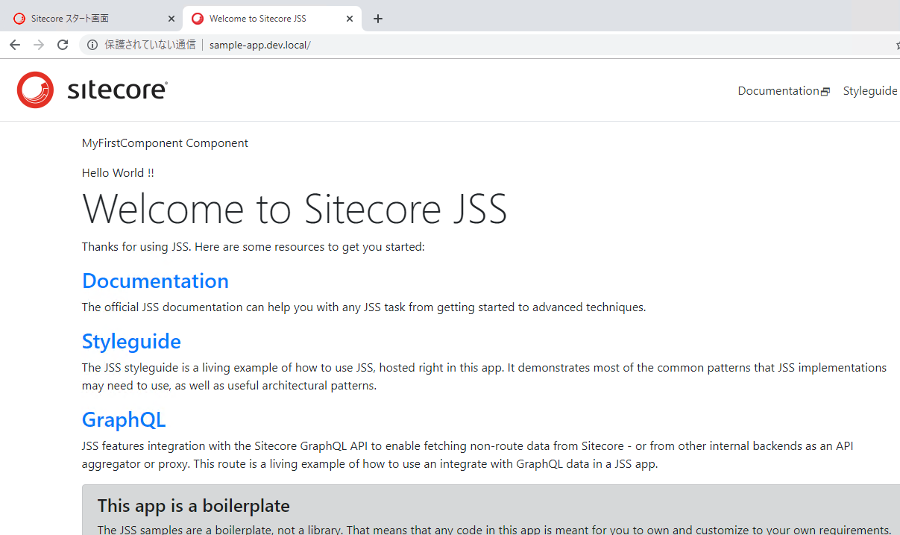
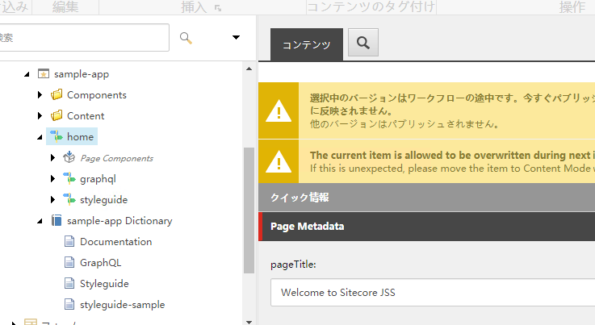

1.5. 作成したアプリの展開¶
ここでは実際に作成をした React で作った JavaScript のアプリを Sitecore に展開する手続きを進めます。
1.5.1. JSS アプリの準備¶
サンプルのアプリを作成した際には、 sitecoreconfig<appname>.config という形で設定ファイルが作成されています。今回動作させるホスト名を hostName に設定します。
<site patch:before="site[@name='website']"
inherits="website"
name="sample-app"
hostName="sample-app.dev.local"
rootPath="/sitecore/content/sample-app"
startItem="/home"
database="master" />
今回はデモ環境のため、このまま sample-app.dev.local の名前を、 C:¥¥Windows¥¥System32¥¥drivers¥¥etc¥¥hosts に追加します。
127.0.0.1 sample-app.dev.local
Sitecore がインストースされているインスタンスに対して、このホスト名を追加します。
{kind=link}
1.5.2. Sitecore の準備¶
作成したアプリを展開するにあたり、API Key を Sitecore 側で準備をする必要があります。API Key の作成は以下の手順でできます。
Sitecore に管理者権限でログインをします。
コンテンツエディターを開きます
/sitecore/system/Settings/Services/API Keys のアイテムを選択します
{kind=link}
API キーを作成します、ここではアプリ名で作成しました
{kind=link}
API キーに以下の項目を設定します
設定名 設定内容 今回の設定
CORS Origines http://localhost:3000 認められたコントローラー * 偽装ユーザー extranetanonymous スロットルストラテジー 空欄
{kind=link}
アイテムをパブリッシュします
アイテム ID を控えます
{kind=link}
このサンプルでは、{45D95A97-1FD4-4403-BF9C-42BFD75843FE} がアイテム ID になります。
作成したキーが利用できるか、以下の URL でアクセスをします
http://sample-app.dev.local/sitecore/api/layout/render/jss?item=/&sc_apikey={YOUR_API_KEY_ID}
アクセスをすると、以下のように JSON 形式でデータが表示されます。
{kind=link}
1.5.3. JSS アプリと Sitecore の接続¶
設定が完了したので、接続をする手順と接続を実施します。まず、コマンドとして jss setup を実行してください。
最初にインスタンスの状態を聞いてきます。ここでは y を選択します。
続いて Sitecore がインストールされているディレクトリ名を記載します。
PS C:\Users\Sitecore\sample-app> jss setup
Is your Sitecore instance on this machine or accessible via network share? [y/n]: y
Path to the Sitecore folder (e.g. c:\inetpub\wwwroot\my.siteco.re): C:\inetpub\wwwroot\sample-app.dev.local
Sitecore hostname (e.g. http://myapp.local.siteco.re; see /sitecore/config; ensure added to hosts): http://sample-app.dev.local
Sitecore import service URL [http://sample-app.dev.local/sitecore/api/jss/import]:
Sitecore API Key (ID of API key item): {45D95A97-1FD4-4403-BF9C-42BFD75843FE}
Please enter your deployment secret (32+ random chars; or press enter to generate one): 256655EC8F3A45B5AD90B63BC25B8067
Deploy secret Sitecore config written to C:\Users\Sitecore\sample-app\sitecore\config\sample-app.deploysecret.config
Ensure this configuration is deployed to Sitecore.
JSS connection settings saved to C:\Users\Sitecore\sample-app\scjssconfig.json
NEXT STEPS
* Ensure the hostName in /sitecore/config/*.config is configured as sample-app.dev.local, and in hosts file if needed.
* Deploy your configuration (i.e. 'jss deploy config')
* Deploy your app (i.e. 'jss deploy app -c -d')
* Test your app in integrated mode by visiting http://sample-app.dev.local
PS C:\Users\Sitecore\sample-app>
上記の設定を元に、Sitecore に設定ファイルを追加します。このコマンドは jss deploy config を実行するだけとなります。
PS C:\Users\Sitecore\sample-app> jss deploy config
Copying ./sitecore/config to C:\inetpub\wwwroot\habitathome.cmsdemo.jp\App_Config\Include\zzz...
JSS app build artifacts have been deployed to Sitecore.
設定のコピーが完了したあと、実際のアプリの情報を展開します。この際、コンテンツや辞書情報も含めてインポートをする形とするため、今回は jss deploy app --includeContent --includeDictionary とコマンドを実行します。
PS C:\Users\Sitecore\sample-app> jss deploy app --includeContent --includeDictionary
JSS is creating a manifest for sample-app to ./sitecore/manifest...
Cleaning path ./sitecore/manifest...
Cleaned:
C:\Users\Sitecore\sample-app\sitecore\manifest\data
C:\Users\Sitecore\sample-app\sitecore\manifest\data\media
C:\Users\Sitecore\sample-app\sitecore\manifest\data\media\files
C:\Users\Sitecore\sample-app\sitecore\manifest\data\media\files\jss.pdf
C:\Users\Sitecore\sample-app\sitecore\manifest\data\media\img
C:\Users\Sitecore\sample-app\sitecore\manifest\data\media\img\jss_logo.png
C:\Users\Sitecore\sample-app\sitecore\manifest\data\media\img\sc_logo.png
C:\Users\Sitecore\sample-app\sitecore\manifest\sitecore-import.json
Enabling Babel 7 transpilation for the manifest...
path or pattern './sitecore/pipelines/**/*.patch.js' did not match any files.
path or pattern './sitecore/pipelines/**/*.patch.ts' did not match any files.
copied media from: ./data/media/img/sc_logo.png to: sitecore\manifest\data\media\img\sc_logo.png
copied media from: ./data/media/img/jss_logo.png to: sitecore\manifest\data\media\img\jss_logo.png
copied media from: ./data/media/files/jss.pdf to: sitecore\manifest\data\media\files\jss.pdf
Manifest has been generated and written to ./sitecore/manifest/sitecore-import.json
JSS is manifest packaging sample-app to ./sitecore/package...
Adding data/media/files/jss.pdf
Adding data/media/img/jss_logo.png
Adding data/media/img/sc_logo.png
Adding sitecore-import.json
Wrote sitecore\package\sample-app.1574663545523.manifest.zip
Sending package sitecore\package\sample-app.1574663545523.manifest.zip to http://sample-app.dev.local/sitecore/api/jss/import...
Sitecore has accepted import task JSSImport-sample-app-6:32:25 AM
Job started: JSSImport-sample-app-6:32:25 AM
Importing sample-app as sitecore\JssImport
Import database is master
Import data contains:
Templates - 29
Renderings - 27
Placeholders - 7
Route Items - 6
Other Items - 12
Dictionary Items - 4
Import language is en
Reloaded all GraphQL schemas.
Import is complete.
> npm run build --
> sample-app@12.0.0 build C:\Users\Sitecore\sample-app
> npm-run-all --serial bootstrap:connected build:client build:server
> sample-app@12.0.0 bootstrap:connected C:\Users\Sitecore\sample-app
> node scripts/bootstrap.js
Writing runtime config to C:\Users\Sitecore\sample-app\src\temp\config.js
Registering JSS component ContentBlock
Registering JSS component GraphQL-ConnectedDemo
Registering JSS component GraphQL-IntegratedDemo
Registering JSS component GraphQL-Layout
Registering JSS component MyFirstComponent
Registering JSS component Styleguide-ComponentParams
Registering JSS component Styleguide-CustomRouteType
Registering JSS component Styleguide-FieldUsage-Checkbox
Registering JSS component Styleguide-FieldUsage-ContentList
Registering JSS component Styleguide-FieldUsage-Custom
Registering JSS component Styleguide-FieldUsage-Date
Registering JSS component Styleguide-FieldUsage-File
Registering JSS component Styleguide-FieldUsage-Image
Registering JSS component Styleguide-FieldUsage-ItemLink
Registering JSS component Styleguide-FieldUsage-Link
Registering JSS component Styleguide-FieldUsage-Number
Registering JSS component Styleguide-FieldUsage-RichText
Registering JSS component Styleguide-FieldUsage-Text
Registering JSS component Styleguide-Layout
Registering JSS component Styleguide-Layout-Reuse
Registering JSS component Styleguide-Layout-Tabs
Registering JSS component Styleguide-Layout-Tabs-Tab
Registering JSS component Styleguide-Multilingual
Registering JSS component Styleguide-RouteFields
Registering JSS component Styleguide-Section
Registering JSS component Styleguide-SitecoreContext
Registering JSS component Styleguide-Tracking
Writing component factory to C:\Users\Sitecore\sample-app\src\temp\componentFactory.js
> sample-app@12.0.0 build:client C:\Users\Sitecore\sample-app
> cross-env-shell PUBLIC_URL=$npm_package_config_sitecoreDistPath "react-scripts build"
Creating an optimized production build...
Browserslist: caniuse-lite is outdated. Please run next command `npm update caniuse-lite browserslist`
Compiled successfully.
File sizes after gzip:
123.75 KB build\static\js\1.898f276c.chunk.js
21.85 KB build\static\css\1.360b8f80.chunk.css
14.57 KB build\static\js\main.2678a662.chunk.js
771 B build\static\js\runtime~main.0e5bfa88.js
148 B build\static\css\main.61b40953.chunk.css
The project was built assuming it is hosted at /dist/sample-app/.
You can control this with the homepage field in your package.json.
The build folder is ready to be deployed.
Find out more about deployment here:
http://bit.ly/CRA-deploy
> sample-app@12.0.0 build:server C:\Users\Sitecore\sample-app
> cross-env-shell NODE_ENV=production "webpack --config server/server.webpack.config.js"
Browserslist: caniuse-lite is outdated. Please run next command `npm update caniuse-lite browserslist`
Hash: 13f3d0ed933710e7b310
Version: webpack 4.19.1
Time: 4030ms
Built at: 11/25/2019 6:32:57 AM
Asset Size Chunks Chunk Names
../build/server.bundle.js 1.12 MiB 0 [emitted] main
Entrypoint main = ../build/server.bundle.js
[6] ./src/temp/config.js 501 bytes {0} [built]
[19] external "stream" 42 bytes {0} [built]
[23] external "url" 42 bytes {0} [built]
[25] external "http" 42 bytes {0} [built]
[29] external "https" 42 bytes {0} [built]
[32] external "util" 42 bytes {0} [built]
[45] external "zlib" 42 bytes {0} [built]
[64] ./src/temp/GraphQLFragmentTypes.json 4.68 KiB {0} [built]
[73] ./src/assets/sc_logo.png 5.36 KiB {0} [built]
[75] ./build/index.html 2.23 KiB {0} [built]
[109] ./node_modules/encoding/lib sync 160 bytes {0} [optional] [built]
[124] (webpack)/buildin/module.js 497 bytes {0} [built]
[125] (webpack)/buildin/harmony-module.js 573 bytes {0} [built]
[186] ./src/assets/app.css 360 bytes {0} [built]
[188] ./server/server.js + 158 modules 581 KiB {0} [built]
| ./server/server.js 6.7 KiB [built]
| ./src/lib/GraphQLClientFactory.js 2.02 KiB [built]
| ./src/i18n.js 2.58 KiB [built]
| ./src/RouteHandler.js 9.64 KiB [built]
| ./src/AppRoot.js 1.94 KiB [built]
| ./src/dataFetcher.js 703 bytes [built]
| ./src/temp/componentFactory.js 4.12 KiB [built]
| ./src/lib/SitecoreContextFactory.js 602 bytes [built]
| ./src/Layout.js 2.75 KiB [built]
| ./src/NotFound.js 1010 bytes [built]
| ./src/lib/GraphQLData.js 5.83 KiB [built]
| + 148 hidden modules
+ 199 hidden modules
WARNING in ./node_modules/encoding/lib/iconv-loader.js 9:12-34
Critical dependency: the request of a dependency is an expression
@ ./node_modules/encoding/lib/encoding.js
@ ./node_modules/node-fetch/lib/body.js
@ ./node_modules/node-fetch/index.js
@ ./node_modules/isomorphic-fetch/fetch-npm-node.js
@ ./src/lib/GraphQLClientFactory.js
@ ./server/server.js
Copying C:\Users\Sitecore\sample-app\build to C:\inetpub\wwwroot\habitathome.cmsdemo.jp\dist\sample-app...
JSS app build artifacts have been deployed to Sitecore.
PS C:\Users\Sitecore\sample-app>
展開されたメッセージが表示されれば、インポートは完了となります。
1.5.4. Sitecore における動作確認¶
実際にインポートされたサイトに関して、ブラウザ経由でアクセスします。今回は http://sample-app.dev.local/ にアクセスをすると以下のようにページが表示されます。
{kind=link}
管理画面にログインをして、コンテンツエディタを開いてください。下記のように新しいコンテンツツリーが作成されていることがわかります。
{kind=link}
これで JSS の最も小さなプロジェクトを作成して、コンテンツがどのように Sitecore と連携できるのか、というのを確認することができました。
もう少し Sitecore JSS に関して学ぶ場合は、 Step by Step ガイド を参考にしてください。